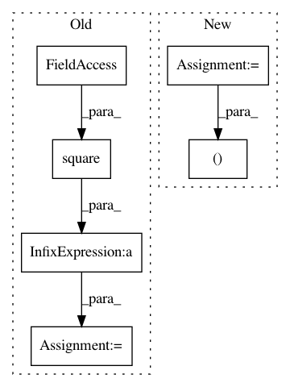

4aca883df35c670c1684200269c79e38f90452bc,GPy/kern/rbf.py,rbf,_psi_computations,#rbf#Any#Any#Any#,197
Before Change
//psi2
self._psi2_denom = 2.*S[:,None,None,:]/self.lengthscale2+1. // N,M,M,Q
self._psi2_mudist = mu[:,None,None,:]-self._psi2_Zhat //N,M,M,Q
self._psi2_mudist_sq = np.square(self._psi2_mudist)/(self.lengthscale2*self._psi2_denom)
self._psi2_exponent = np.sum(-self._psi2_Zdist_sq/4. -self._psi2_mudist_sq -0.5*np.log(self._psi2_denom),-1) //N,M,M
self._psi2 = np.square(self.variance)*np.exp(self._psi2_exponent) // N,M,M
self._Z, self._mu, self._S = Z, mu,S
After Change
//psi2
self._psi2_denom = 2.*S[:,None,None,:]/self.lengthscale2+1. // N,M,M,Q
self._psi2_mudist = mu[:,None,None,:]-self._psi2_Zhat //N,M,M,Q
self._psi2_mudist_sq, self._psi2_exponent, _ = self.weave_stuff()
//self._psi2_mudist_sq = np.square(self._psi2_mudist)/(self.lengthscale2*self._psi2_denom)
//self._psi2_exponent = np.sum(-self._psi2_Zdist_sq/4. -self._psi2_mudist_sq -0.5*np.log(self._psi2_denom),-1) //N,M,M
self._psi2 = np.square(self.variance)*np.exp(self._psi2_exponent) // N,M,M
In pattern: SUPERPATTERN
Frequency: 3
Non-data size: 6
Instances
Project Name: SheffieldML/GPy
Commit Name: 4aca883df35c670c1684200269c79e38f90452bc
Time: 2013-04-10
Author: james.hensman@gmail.com
File Name: GPy/kern/rbf.py
Class Name: rbf
Method Name: _psi_computations
Project Name: bethgelab/foolbox
Commit Name: 66bd36230834da701e9ea1cea5062e2c1839a436
Time: 2017-06-16
Author: jonasrauber@users.noreply.github.com
File Name: foolbox/distances.py
Class Name: MeanSquaredDistance
Method Name: _calculate
Project Name: SheffieldML/GPy
Commit Name: e906da0309620bad16c4e36a040e407c0c131c2d
Time: 2015-09-06
Author: z.dai@sheffield.ac.uk
File Name: GPy/kern/_src/mlp.py
Class Name: MLP
Method Name: update_gradients_diag